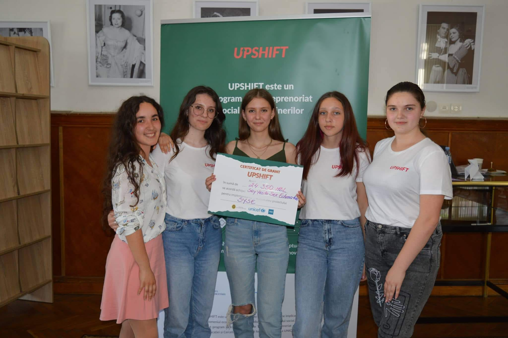
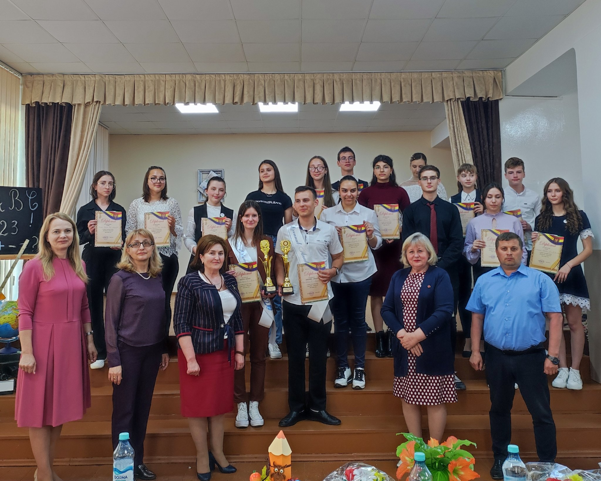

Noutăți
Programul UPSHIFT
04/06/2022 {kind=link}
În data de 4 iunie, în incinta Bibliotecii Naționale a Republicii Moldova a avut loc prezentarea
proiectelor dezvoltate de către 80 de tineri absolvenți ai programului de inovare socială,
dedicat tinerilor cu vârste cuprinse între 16 și 25 ani – UPSHIFT.
Din cele 31 de proiecte prezentate doar 12 au fost selectate pentru finanțare. Printre
câștigători se află și un grup de tineri din Ungheni. Este vorba despre cinci tineri, membri ai
grupului de inițiativă „Eminescienii”, din cadrul Instituției Publice Liceul Teoretic „Mihai
Eminescu” din Ungheni.
Află
mai mult...
Concursul literar „La Izvoarele Înțelepciunii”
21/05/2022
Alexandra Mușet este una dintre cei 3 ungheneni care a reprezentat raionul Ungheni la etapa republicană a concursului literar „La Izvoarele Înțelepciunii”. Ea fiind câștigătoarea locului I la etapa raională, care s-a desfășurat la data de 10 mai la BP „Dimitrie Cantemir”. Precizăm că la data 21 mai în cadrul CNIDE Clasa Viitorului, UPS Universitatea Pedagogică de Stat „Ion Creangă”, s-a desfășurat Concursul național de lectură „La Izvoarele înțelepciunii”, ediția a XXXII-a, etapa republicană, dedicată scriitorului Nicolae Dabija. Află mai mult...
Concursul raional „Elevul Anului”
20/05/2022 {kind=link}
Recent, Direcția Educație Ungheni a desfățurat etapa finală a concursului raional „Elevul
Anului”. În cadrul concursului au fost înscriși 18 elevi din 10 instituții de învățământ, iar
pentru titlul onorific „Elevul Anului” au concurat 12 elevi din treapta gimnazială. La categoria
„Liceanul Anului” au participat 6 elevi din liceele din raionul Ungheni.
Conform organizatorilor, la prima probă din cadrul concursului au fost evaluate dosarele
participanților, unde aceștia au adunat cele mai frumoase rezultate pe care le-au obținut în
anul curent de studii. Următoarea probă a concursului a contribuit la evaluarea istețimii și
ingeniozității participanților. Astfel, în cadrul acestei probe participanții și-au prezentat
pasiunile și capacitățile.
Află
mai mult...